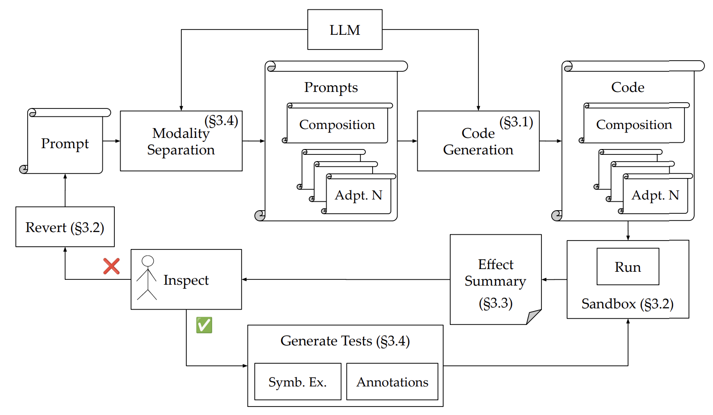
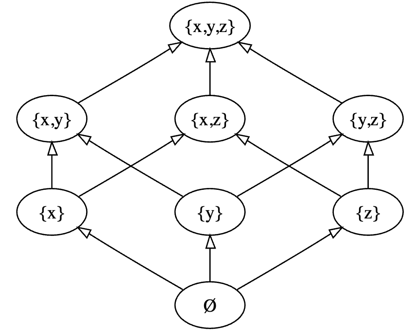

|
Sai Achalla Hello! I'm a second-year PhD student at UCLA, advised by Sam Kumar and Remy Wang. I'm broadly interested in building efficient, large scale systems. I studied computer science during my undergrad at UC Berkeley. I was involved with the SkyLab where I was fortunate to work with Conor Power and Prof. Joe Hellerstein. I'm extremely grateful for their advice in every aspect of my academic journey. Fun Fact: I'm from Francistown, Botswana. If you know where that is, your geography knowledge is pretty impressive! |
{kind=link}
Blog |

|
Learning With Errors
October 20, 2025 Some cool things about the Learning with Errors problem |
Research |
|  |
NaSh: Guardrails for an LLM-Powered Natural Language Shell
Bimal Raj Gyawali, Saikrishna Achalla, Konstantinos Kallas, Sam Kumar [paper] We explore how a shell that uses an LLM to accept natural language input might be designed differently from the shells of today. |
|  |
Wrapping Rings in Lattices: An Algebraic Symbiosis of Incremental View Maintenance and Eventual Consistency
Conor Power, Saikrishna Achalla, Ryan Cottone, Nathaniel Macasaet, Joseph M. Hellerstein PaPoC, 2024 [paper] We reconcile the use of semi-lattices in CRDTs and the use of groups and rings in incremental view maintenance to construct systems with strong eventual consistency, incremental computation, and database query optimization. |
Teaching |
|
Teaching Assistant, CS161 Summer 2023
Teaching Assistant, CS161 Fall 2023 Head Teaching Assistant, CS161 Spring 2024 |
Work Experience |
|
Research Intern
Summer 2025 Mentor: Will Schultz Researched transactions and alternative definitions of snapshot isolation. |
|
Template adapted from Jonathan Barron. |